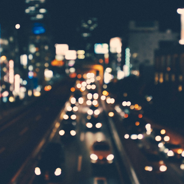

Уникальный торговый центр «Тринити» располагается
в 7 минутах от центра города, где находятся главные исторические
достопримечательности Гродно, посещаемые туристами.
В 700 м от ТРЦ «Тринити» находится
комфортабельная гостиница «Турист»,
а в 2,5 км располагается один из лучших
ночных клубов Беларуси — «База».
6 280 м2
Общая площадь бизнес-центра
Добраться до центра города можно за
15 минут на любом из 30 маршрутов
общественного транспорта.
Комфортабельные офисные помещения для ведения бизнеса
Преимущества нашего бизнес-центра
Наш бизнес-центр оснащен самыми новыми технологиями, среди которых:
приточно-вытяжной вентиляции с рекуперацией тепла и чиллером с функцией теплового насоса
управления зданием: система автоматизации и система контроля и управления энергоресурсами.
телекоммуникаций – строительство оптической сети (PON),сети радиофи- кации и телефонизации.
импортное лифтовое оборудование преимум класса.
Преимущества нашего бизнес-центра
Уникальный торговый центр «Тринити» располагается в
7 минутах от центра города, где находятся главные исторические
достопримечательности Гродно, посещаемые туристами.

Новый торгово-развлекательный комплекс будет располагаться
в 7 минутах от центра города, где находятся главные исторические
достопримечательности г.Гродно, посещаемые туристами.
В 700 метрах от ТРЦ «Тринити» находится комфортабельная гостиница
«Турист», а в 2,5 км – один из лучших ночных клубов Беларуси «БАЗА».
Общедоступность ТРЦ обусловлена хорошо развитой
транспортной инфраструктурой города.
Новый торгово-развлекательный комплекс будет располагаться
в 7 минутах от центра города, где находятся главные исторические
достопримечательности г.Гродно, посещаемые туристами.
В 700 метрах от ТРЦ «Тринити» находится комфортабельная гостиница
«Турист», а в 2,5 км – один из лучших ночных клубов Беларуси «БАЗА».
Общедоступность ТРЦ обусловлена хорошо развитой транспортной
инфраструктурой города.
Бизнес-центр для успешных компаний
4 причины выбрать наш бизнес-центр “Тринити”:
Транспортная доступность
30 маршрутов общественного транспорта, плюс бесплатный 3-этажный паркинг
Развитая инфраструктура
90 000 человек населения охватываемого района
Комфортабельные помещения
Наши офисы подойдут как для маленьких,
так и крупных компаний
крупный ТРК Гродно
Первый и единственный развлекательный
торговый-центр города Гродно
Состоялось долгожданное торжественное открытие гипермаркета бытовой
техники и электроники «Корона Техно» в торговом центре «Замок». Гостям было чему порадоваться и удивиться. Праздник удался на славу.